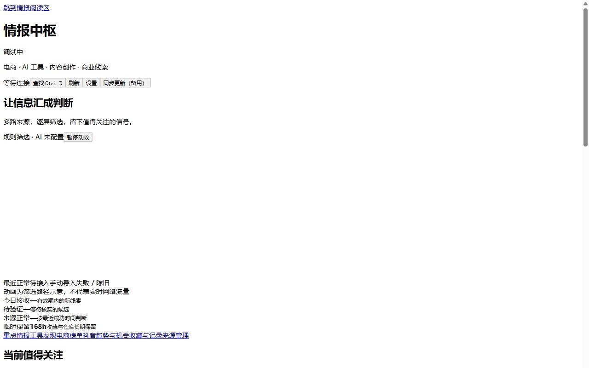
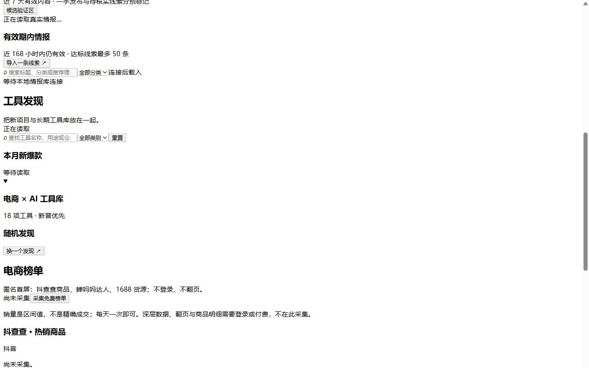

界面一览
桌面端主界面、重点情报区和来源管理，按实际使用流程排列。

主界面：多路来源汇成判断，左侧导航 / 中部信号流 / 右侧重点情报

重点情报区：近 7 天有效内容，一手发布与待核实线索分开标记

来源管理：分类、有效性、更新节奏统一管理，失败/陈旧自动降级
怎么跑起来的
四步流水线，每天自动跑，我只处理留下的信号。
1
采集
40+ 来源定时抓取，覆盖公众号、电商榜单、AI 工具和行业线索。
2
去重
标题/链接/相似度三层去重，同一个事件只留一条。
3
打分
规则 + AI 双通道打分：来源权重、时效、关键词、可验证性。
4
输出
重点情报进日报，未证实进待验证区，过期自动淘汰。
电商AI 工具内容创作商业线索规则筛选日报推送